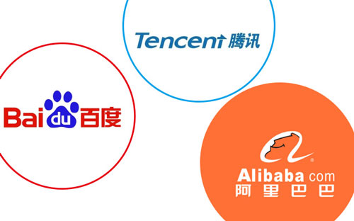

- 1
- 2
- 3
- 4
- The 1's li.The 1's div.
- The 2's li.The 2's div.
- The 3's li.The 3's div.
- The 4's li.The 4's div.
- The 5's li.The 5's div.
- 技术牛
- 享生活
- 关于我
- 留言板
技术牛
享生活
关于我:
以前是做网络维护的，后来接触到了数据库维护。经过一段时间的工作，发现自己在公司里就像个打杂的，什么跟电沾边的事都来找。现在想静下心来学技术，乘着互联网这股大风潮去重新打拼。
“人生像大海，只有朝一个方向航行才能到达彼岸。”
——by 7night
本网站空间由提供。
留言板
庆祝个人博客正式上线，找到家了^_^
日期:2016-11-22 作者:原创
2016年9月中旬开始学习web前端开发，至今已有两个月了。主要学习了html+css+javascript这三部分，另外jquery才刚开始接触。平常主要靠看后盾网第三期前端教程视频来学习。虽然没参加培训班是在家自学的，但仍然要感谢后盾网的孙老师，讲课很系统也很诙谐。两个月来学得不够扎实，所以想借助实践制作网站来巩固学习效果，这就是个人博客开通的初衷。
因为本着学习实践的目的，也就没想着花钱购买虚拟主机，最后很费劲的找到了现在这。Hostinger香港网站，该空间提供没有功能限制的PHP和MySQL支持，2G空间、每月100G流量，2个FTP用户，2个邮箱帐号，支持网站及数据库的备份还原功能。由于是香港服务器免于了备案的烦恼，非常适合刚接触web前端开发的新人练手。
最后在这里祝大家生活、工作愉快，也祝愿自己能成为一个BAT大牛！
